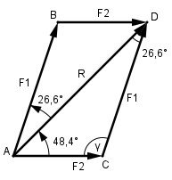

Aufgabe 217 Wie groß sind die Teilkräfte F1 und F2, wenn sie zur ResultierendenR = 6 375 N die Winkel α = 48,4° und β = 26,6° bilden?

Im Dreieck ACD: γ = 180° - 48,4° - 26,6° = 105° Fall SWW: Sinussatz: R F2 -------- = ------------- |*sin 26,6° sin γ sin 26,6° R * sin 26,6° 6 375 N * 0,4478 F2 = ---------------- = -------------------- = sin γ sin 105° 6 375 N * 0,4478 = ------------------- = 2 955,5 N 0,9659 Fall SWW: Sinussatz: R F1 -------- = ----------- |*sin 48,4° sin γ sin 48,4° R * sin 48,4° 6 375 N * 0,7478 F1 = ---------------- = ------------------- = sin γ sin 105° 6 375 N * 0,7478 = ------------------ = 4 935,5 N 0,9659